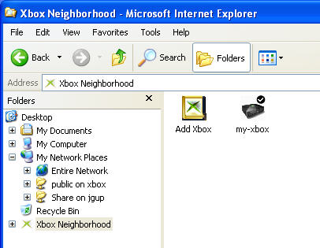

The Microsoft® Windows® Explorer Shell Extension for Xbox® extends the standard Windows Explorer to allow management of Xbox consoles in your neighborhood.
The following list contains the features that have been added to Windows Explorer.
Once the shell extension has been installed, you can access your Xbox Neighborhood. This neighborhood shows all of the Xbox development consoles that you can manage and see.
To access the Xbox neighborhood:However you choose to get there, you will see something similar to the following image.

At a minimum, the content view will always show "Add Xbox" and any Xbox development consoles that have already been added. The image above shows that my-xbox is already in the Xbox Neighborhood and the small check mark in the right corner of the icon indicates that my-xbox is the default target Xbox console.
Adding an Xbox to the neighborhood is fairly straightforward. While in Xbox Neighborhood, double-click Add Xbox. This will start the Add New Xbox Development Kit wizard which guides you through the process. In order to add an Xbox, you must know either the Xbox name or its IP address.
If you attempt to add an Xbox that has been locked, you will be prompted to enter the administrative password for that Xbox. If you don't know the password, or if the password that you enter is incorrect, you will be unable to add that Xbox.
By default, Xbox systems are insecure. Any user on a network, with sufficient knowledge, can easily surf for Xbox consoles and perform activities such as file transfers. This poses an enormous security hole, particularly for publishers working on multiple titles.
To close this security hole, an Xbox can be locked. Once an Xbox has been locked, permissions such as read, write, configure, control, and manage may be assigned on a machine-by-machine basis. Permissions are not granted on a user level. An Xbox may be locked by either using the shell extension or by using the Security tool (XbManage).
The Xbox kernel supports ANSI file names only. As a result, any attempt to create, copy, or rename a file or folder with non-ANSI characters will result in an error saying it's an invalid file name.